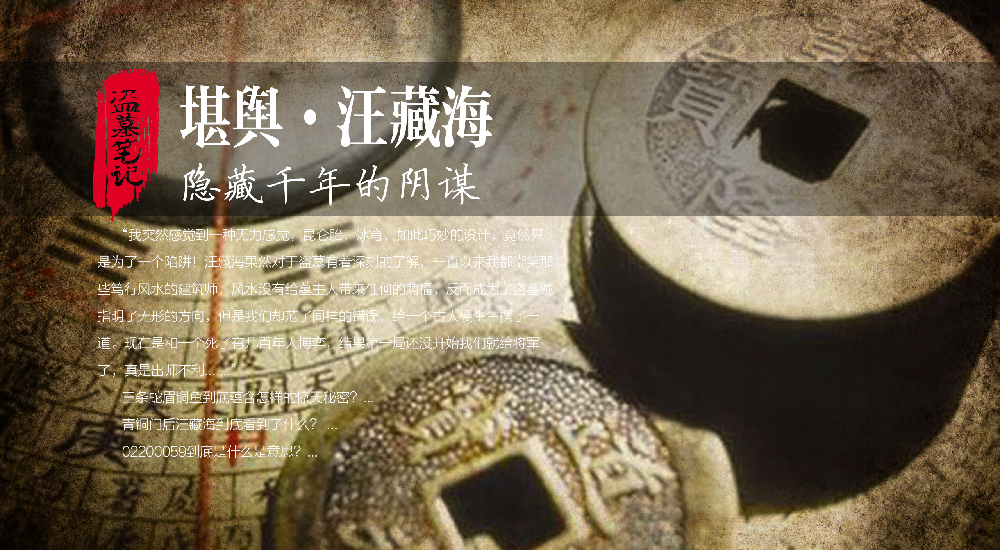

内容简介
沙海是南派三叔创作的盗墓笔记系列衍生作品，故事发生在盗墓笔记正篇之后。普通高中生黎簇在高考前夕遭遇了一场突如其来的袭击，后背被人刻上了一幅神秘的地图。这次袭击彻底改变了他的人生轨迹，他被卷入了一个以颠覆世界现状为目的的庞大阴谋之中。
黎簇因此结识了这一切的幕后布局者——以旅行摄影作家"关根"身份登场的吴邪。曾经天真无邪的吴邪，如今已经收敛了所有的锋芒，以非同常人的智慧和决绝，开始向几千年前就被设定的命局宣战。他利用九门禁地古潼京，精心谋划出清肃九门、摧毁汪家的反击计划。
整个故事围绕着沙漠深处的古潼京展开，这里埋藏着无数的秘密与危险。吴邪将黎簇培养成自己的棋子，让他深入汪家内部，而这一切的背后，是一场延续了几千年的正邪较量。故事充满了反转与悬念，让人欲罢不能。
人物介绍
吴邪（关根）
曾经天真善良的吴邪，在经历了七星鲁王宫、西沙海底墓、云顶天宫、蛇沼鬼城等一系列事件后，已经彻底蜕变成了一个老谋深算的布局者。他化名"关根"，以摄影作家的身份接近黎簇，将他培养成打入汪家内部的棋子。吴邪的每一次出手都经过精密计算，他的目标很明确——彻底摧毁汪家，结束这场延续千年的争斗。
黎簇
一个普通的高考落榜生，性格略显叛逆，成绩一般。然而就是这样一个普通人，却因为后背被刻上神秘地图而被卷入了九门的纷争之中。黎簇的成长是整个故事的主线之一，从最初的懵懂无知，到后来能够独当一面，他经历了常人难以想象的磨难。在古潼京中，他学会了读取费洛蒙，看到了吴三省留下的记忆，逐渐明白了吴邪的计划。
张日山
张家的当家人，老九门的领袖人物。他在沙海中扮演着举足轻重的角色，既是吴邪的盟友，又是九门秩序的维护者。张日山有着深厚的城府和过人的智慧，在面对汪家的威胁时，他选择与吴邪合作，共同对抗这个隐藏了几千年的敌人。
梁湾
一位医术精湛的女医生，性格温柔善良。她在故事中多次帮助黎簇等人，是团队中不可或缺的存在。梁湾与黎簇之间有着微妙的情感纠葛，她对黎簇的关心超越了普通的医患关系。在沙漠探险中，她的医术多次救了大家的命。
黑瞎子
神秘莫测的黑瞎子，身手了得，来去如风。他是吴邪的得力助手，在沙海中多次出手相助。黑瞎子的真实身份和背景始终是个谜，但他的实力毋庸置疑。在古潼京的探险中，他与苏万、梁湾一起被汪家人追杀，被迫跳崖，生死未卜。
苏万与苏难
苏万是黎簇的好兄弟，性格豪爽义气。他跟随黎簇一起卷入了这场阴谋，在沙漠中出生入死。苏难则是汪家的重要成员，心狠手辣，她曾偷袭吴邪，导致吴邪坠崖，生死不明。苏家两兄妹，一个站在正义一边，一个效忠汪家，命运的安排让人唏嘘。
王胖子与霍秀秀
王胖子一如既往地勇猛，在沙海中他与霍秀秀、蓝袍藏人一起行动。他们抓住了混入九门的汪家人汪灿，试图挖出更多潜伏的汪家内奸。霍秀秀则是九门后人中的佼佼者，她不顾张日山的反对，执意前往古潼京探险，展现了九门人的血性与胆识。
剧情分析
剧情（上）——袭击与阴谋的开端
故事的开篇就令人震撼——黎簇在回家的路上突然遭到袭击，醒来后发现自己的后背上被刻上了一幅复杂的地图。这幅地图正是通往古潼京的路线图。黎簇的生活从此天翻地覆，他被卷入了一个他完全不了解的世界。
吴邪以"关根"的身份出现在黎簇面前，以摄影为由带着他踏上了前往沙漠的旅程。黎簇起初并不知道自己正在一步步走进吴邪精心设计的棋局。与此同时，汪家人也在暗中活动，他们对古潼京虎视眈眈，企图从中获取能够颠覆九门的力量。
在古潼京深处，黎簇被汪家人胁迫，被迫为他们读取费洛蒙。费洛蒙是一种能够记录和传递记忆的神秘物质，通过读取费洛蒙，黎簇看到了吴三省留给后人的记忆。他知道了汪家人的目的——取代九门，掌控一切；他也知道了吴邪的使命——引汪家人上钩，将他们一网打尽。
黎簇看到的费洛蒙中，还有吴邪留给他的信息：打入汪家内部。这是一个极其危险的任务，但也是摧毁汪家的关键一步。黎簇没有将这些信息告诉汪家人，只是警告他们再往前走会有危险。然而汪家人根本不听，一步步将自己逼上了绝路。
苏万、梁湾和黑瞎子因为被汪家人追杀，走投无路，最终选择了跳崖。他们的生死成为了悬念，也为后续剧情埋下了伏笔。
剧情（中）——沙漠深处的博弈
吴邪通过黑毛蛇将打入汪家的任务正式传达给黎簇。黑毛蛇是一种特殊的传递媒介，只有特定的人才能解读其中的信息。吴邪在完成这一切安排后，付清了这些年欠王盟的工资，然后孤身一人前往墨脱。
吴邪来墨脱的目的可能有两个：一是布置新的"棋局"，等待汪家人上当；二是与他和小哥张起灵的十年之约有关。青铜门后的秘密，始终是吴邪心中的执念。然而命运弄人，吴邪在墨脱遭遇了苏难的偷袭，两人一同坠入山崖，生死不明。
与此同时，黎簇在沙漠中经历了重重考验。他利用吴邪教给他的技巧，逐渐学会了如何在汪家人面前伪装自己。他必须表现出对汪家的忠诚，同时暗中收集情报，为吴邪的计划提供支持。这种双面间谍的生活让黎簇身心俱疲，但他知道，这是摧毁汪家的唯一途径。
古潼京的沙漠中隐藏着无数的机关和陷阱。汪家人虽然人多势众，但在古潼京的复杂地形面前也屡屡受挫。黎簇读取的费洛蒙中包含了古潼京的许多秘密，这些知识成为了他在沙漠中生存的关键。
汪家内部也并非铁板一块。有人对汪家的计划产生了怀疑，有人则在暗中与九门势力勾心斗角。这种内部的分裂给了吴邪可乘之机，他的计划正在一步步实现。
剧情（下）——反击与清算
王胖子和霍秀秀、蓝袍藏人费尽九牛二虎之力，终于抓住了一个混入九门的汪家人汪灿。他们原本希望通过汪灿"挖"出更多隐藏在九门里的汪家人，但汪灿被汪家人成功救走，王胖子三人还差点丧命，场面惊险万分。
以霍有雪和陈金水、尹南风为首的几家人，不顾张日山的反对，以"吴邪可以去古潼京，我们也可以去"为借口，浩浩荡荡地来到了沙漠。他们在这里遇到了虎口脱险的黎簇。还好有吴邪的提前指导，黎簇顺利和小满哥、吴家人接触上，可以和霍有雪他们分庭抗衡。
九门内部的纷争正是汪家人最希望看到的。他们最喜欢九门"窝里斗"，这样他们就可以坐收渔翁之利。然而这一切都在吴邪的预料之中，九门的纷争不过是引蛇出洞的策略，目的是让汪家人放松警惕。
随着吴邪的回归，反击的号角正式吹响。他利用在墨脱收集到的情报，制定了详细的作战计划。汪家人虽然实力强大，但在吴邪的精心布局面前，他们的防线开始出现裂痕。
故事的高潮部分，黎簇成功完成了打入汪家内部的任务，获取了汪家的核心机密。这些机密成为了摧毁汪家的致命武器。与此同时，张日山带领九门精锐，对汪家发起了总攻。
在这场正邪较量中，每个人都付出了巨大的代价。但最终，吴邪的计划取得了成功，汪家遭到了毁灭性的打击。这场延续了几千年的争斗，终于迎来了一个阶段性的结局。
解析
费洛蒙的秘密
费洛蒙是沙海中的核心概念之一。它是一种能够记录和传递记忆的神秘物质，通过特殊的手段可以读取其中的信息。费洛蒙的发现和利用，是吴邪计划的关键环节。黎簇能够读取费洛蒙的能力，使他成为了吴邪计划中不可或缺的一环。
古潼京的真相
古潼京是故事的核心场景。这片沙漠深处隐藏着九门的终极秘密，也埋藏着汪家梦寐以求的力量。吴邪选择在这里设局，正是因为古潼京的复杂地形和神秘机关可以为他提供天然的保护。古潼京不仅仅是一个地点，更是一个象征——象征着九门与汪家千年争斗的终极战场。
吴邪的蜕变
从天真无邪到老谋深算，吴邪的蜕变是整个故事最令人唏嘘的部分。他失去了曾经的纯真，换来的是布局天下的能力。吴邪的每一次算计背后，都是对朋友和亲人的深深眷恋。他选择以"关根"的身份出现，既是为了隐藏自己，也是为了保护身边的人。
汪家的覆灭
汪家作为故事的反派势力，其覆灭是必然的结果。他们的野心太过膨胀，低估了吴邪和九门的决心。汪家的覆灭不仅仅是武力上的失败，更是战略上的完败。吴邪利用汪家人的贪婪和傲慢，一步步将他们引入了陷阱。
九门的未来
沙海的故事虽然告一段落，但九门的未来仍然充满变数。张家与汪家的争斗虽然暂时平息，但新的威胁随时可能出现。吴邪在故事结尾留下的伏笔，暗示着更大的阴谋正在酝酿之中。盗墓笔记的世界，永远不会平静。
分析
黎簇最终考上了大学，吴邪他们也平安回来了。梁湾开始踏踏实实地做自己的医生，救死扶伤。汪岑带着残余的汪家人打算东山再起，但他们的实力已经大不如前。
张家与汪家，亦正亦邪，相生相克。他们的战斗不会停止，也不会结束。他们在制衡着对方的发展，让世界保持着微妙的平衡。这种平衡不是和平，而是一种动态的对抗，是正义与邪恶永恒的博弈。
沙海的成功在于它不仅仅是一部盗墓小说，更是一部关于成长与蜕变的史诗。黎簇从一个普通高中生成长为能够独当一面的英雄，吴邪从天真少年蜕变为运筹帷幄的谋士，每个人物都在这场冒险中找到了自己的位置和价值。
故事中的沙漠意象也极具深意。沙漠象征着荒芜与危险，但也象征着希望与新生。在漫天黄沙中，每个人都在寻找自己的方向，都在为自己的信念而战。沙海，既是战场，也是归宿。
到此更新的盗墓笔记在这里告一段落，随后开启的雨村极夜篇，以及青铜门背后的终极秘密，就得看三叔的脑洞了。但可以肯定的是，吴邪的故事还远未结束，更多精彩的冒险正在等待着我们！
